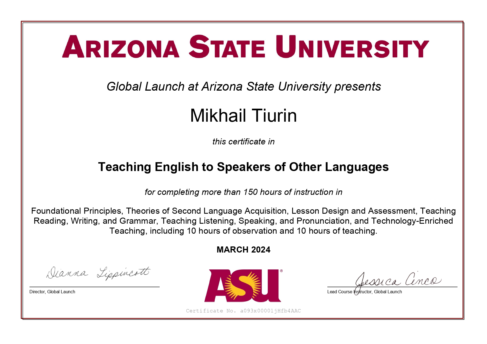

🧑💻 About Myself:

My name is Michail and throughout my studies, I have gained hands-on
experience working in laboratories, ensuring product quality and
adhering to industry standards.
While my academic background, I
have a strong passion for programming and technology. Computers and
the internet have always been a big part of my life, and I am deeply
motivated to create something of my own in the digital world. My
curiosity drives me to explore new technologies, programming
languages, libraries, and frameworks, as their vast possibilities
align perfectly with my desire for continuous learning.
One of
my key strengths is my versatility—I immerse myself deeply in
different fields and always strive to understand new concepts
thoroughly. I am highly goal-oriented, self-motivated, and eager to
improve my skills. Even though my professional experience in tech is
still growing, my dedication to mastering new knowledge makes me
confident in my ability to succeed in this dynamic field.
🤹🏻 Skills and Proficiency:
| icon | skills |
|---|---|
|
|
GIT, GITHUB, GITLAB |
|
|
HTML5, CSS3 (preprocessor SASS) , BEM methodology |

|
JavaScript, TypeScript (basics) |
|
|
Basic python |
 
|
Basic knowledge or relational database SQL and non-relational database MONGODB (mongoose) |
 |
Basic concepts of node.js |
| Basic C (pointers and memory allocation) | |
 |
react (basic hooks, react router) |
 
|
basic tailwind, bootstrap |

|
backend: express (basics) |
🤓 Interesting problem that I solved using JS (Project Euler):
Problem 12: Highly divisible triangular number The sequence of triangle numbers is generated by adding the natural numbers. So the 7th triangle number would be 1 + 2 + 3 + 4 + 5 + 6 + 7 = 28. The first ten terms would be: 1, 3, 6, 10, 15, 21, 28, 36, 45, 55, ... Let us list the factors of the first seven triangle numbers: We can see that 28 is the first triangle number to have over five divisors. What is the value of the first triangle number to have over n divisors?
function* genTriangleNum() {
let k = 1;
while (true) {
yield (k * (k + 1) / 2)
k++
}
}
function checkDivisors(num) {
let count = 0
for (let i = 1; i <= Math.sqrt(num); i++) {
if (num % i === 0) {
count += (i * i === num) ? 1 : 2
}
}
return count
}
function divisibleTriangleNumber(n) {
const gen = genTriangleNum()
let triangle
while (true) {
triangle = gen.next().value
if (checkDivisors(triangle) > n) {
return triangle
}
}
}
💼 Experience & Projects
| Web page for Digital-Studio (Semantic HTML, SASS, adaptive layout) | |
| Business card web page (**Semantic HTML, SASS, adaptive layout**) | |
| repository | My SQL knowledge (thx to cs50 HARVARD) |
🎓 Education and courses:
| Institution / Course | Description | Link |
|---|---|---|
| Kazan National Research Technological University | Higher education from one of Russia's leading technological universities. | Visit website |
| Web Development Course (Innopolis University) | Completed web development course at Russia's premier IT university. | Visit website |
| freeCodeCamp (in progress) | Comprehensive programming curriculum covering various technologies. | Visit website |
| Harvard CS50 (in progress) | Harvard University's introduction to computer science and programming. | Visit website |
| Arizona State University TESOL | Professional certificate in Teaching English to Speakers of Other Languages. | View certificate |
🗺️ Languages
- Russian: native
-
English: Intermediate (B1).
Certified in TESOL (Teaching English to Speakers of Other Languages), specializing in instructing young learners from Asian countries. 